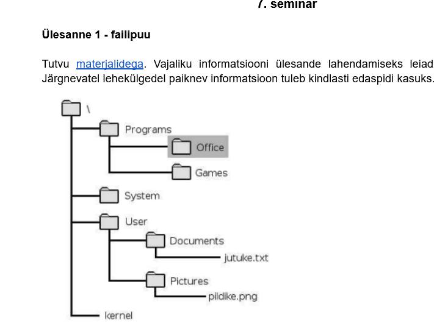

Kuidas läbida tehnilisi praktikume - blogi.
Esimene samm on juhendi lugemine.
Rohkem informatsiooni saab näiteks juhendist.

Kuidas teha praktikumi ülesandeid
- Esimene samm
- Tee asju
- Tee teisi asju
- Näita mis sa tegid
- Mis saab, kui sa midagi ei oska
Tabel - võimalukud arvud, mida sa võid kasutada.
Teine leht — Lisainfo